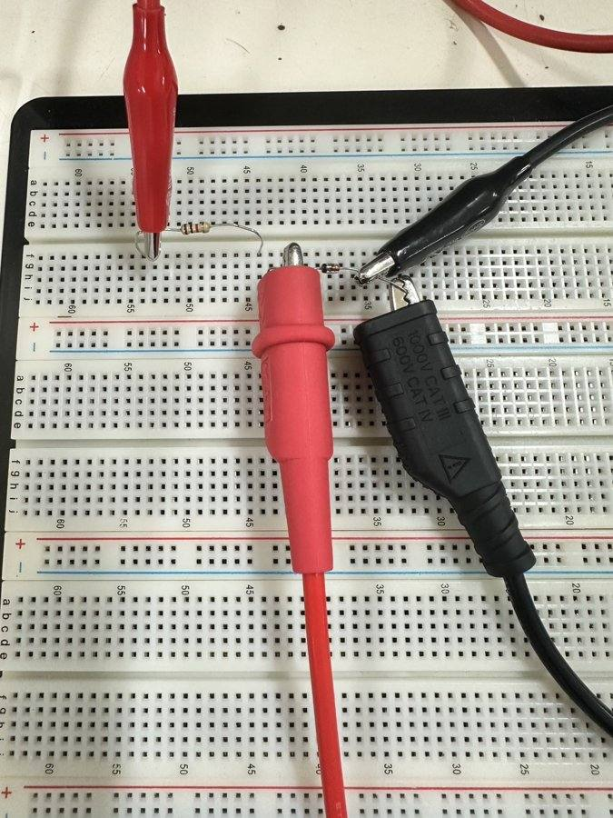
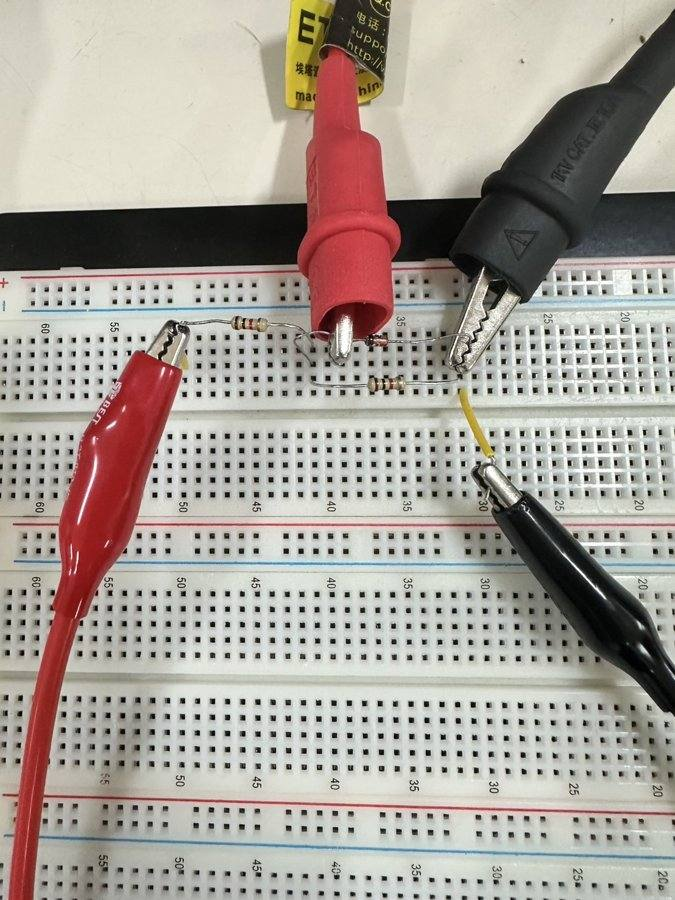
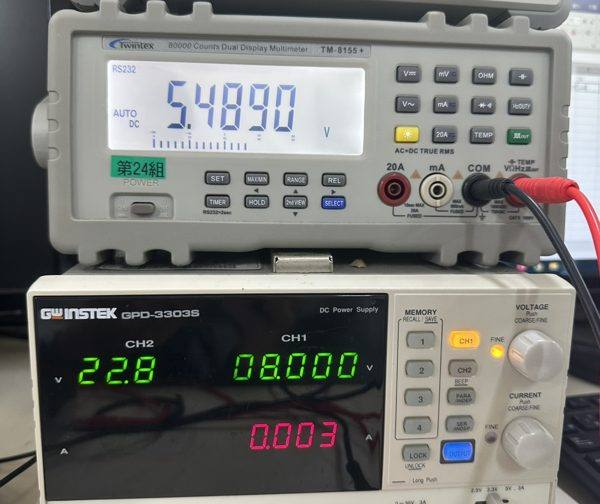
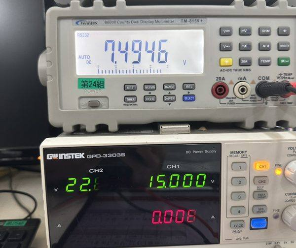
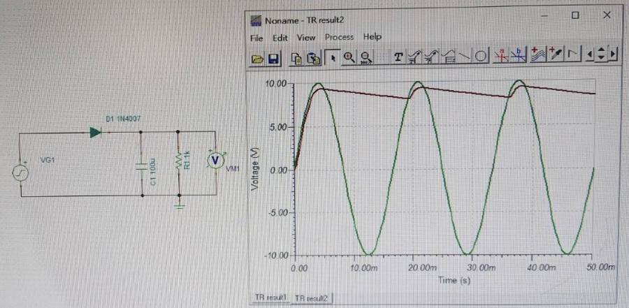
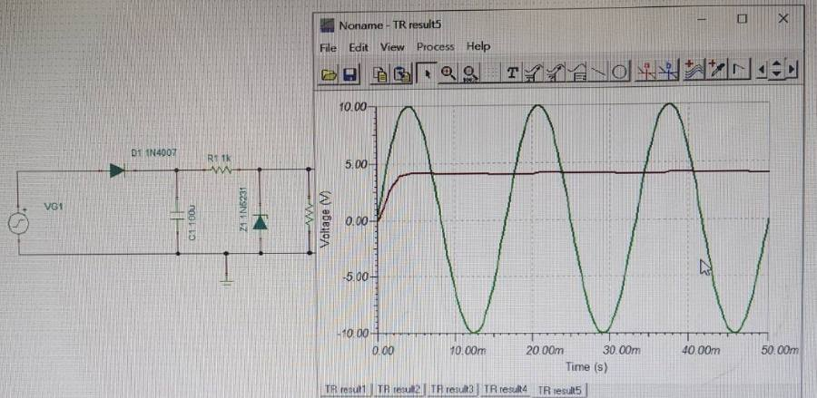

稽納二極體：穩壓電路
電源一直晃、負載一直換，輸出還是要穩穩的 5 V。做法：讓一顆二極體故意住在崩潰區，像水塔的溢流管 —— 水位一到管口，多的就流走。
19 個畫面看懂稽納穩壓THE STORY IN 19 SCENES
點畫面（或往左滑）前進，點左邊四分之一退回；也可以按「自動播放」。大約 7 分鐘。
這一頁怎麼讀PAGE MAP
講義 11 頁：p.2–5 原理、p.6–8 把整條電源供應器接起來、p.9 課堂實驗、p.10 PSpice 作業。
p.2為什麼要穩壓p.3–4稽納特性：VZ、IZK、rz、等效電路p.5穩壓電路、判斷有沒有崩潰p.9🔬 電壓變動率測試 → 📈 結果p.6–8、10💻 PSpice：AC to DC（V1、V2、V3）整頁一句話：稽納＝溢流管，R＝節流閥。先確認「拿掉稽納的分壓 ≥ VZ」，它才會開始穩壓。
- p.5「穩壓條件 VS ≥ VZO」只是必要條件。真正要看的是上面那條：VS·RL/(R + RL) ≥ VZO。
- p.10 PSpice 的 V3 照圖接（R3 = 1 kΩ、負載 1 kΩ）：分壓只有約 4.5 V < 5.1 V，稽納沒崩潰，模擬 V3 ≈ 4.18～4.46 V，不是 5.1 V。負載改 10 kΩ 才會穩在約 5.03 V。請確認作業是要看這個現象，還是負載要改。
- p.6–8 示意圖寫 D1N4001，p.10 作業寫 D1N4007；這個電路兩顆結果幾乎一樣。
- p.9 圖 6.11 稽納標「5V」，PSpice 的 D1N5231 是 5.1 V。
- p.3–4 特性曲線左邊中間那個標籤也寫 −IZK，位置跟右邊的 −IZT 同高，請確認是不是應該是 −IZT。
為什麼要WHY REGULATE
濾波完還剩一點，負載一換電壓也會掉。穩壓電路是電源供應器的最後一關：不管哪一個在變，輸出都盡量不變。
輸出會晃的兩個原因
- 原因 ①：電源浮動（插座電壓、濾波剩下的漣波）
濾波只能把駝峰抹「平一點」。CH4 濾波那頁的 1 kΩ／100 µF，還剩 14.7% 的漣波。
- 原因 ②：負載電流變化（IL 忽大忽小）
手機從待機到打遊戲，吃的電流差好幾倍；電流一大，電源內阻、線路上的壓降就變大，電壓跟著掉。
- 穩壓電路：兩種變化都吸收掉，Vo 盡量不動
講義 p.2 的方塊圖，紅框那一塊。這一章用最簡單的做法：一顆電阻＋一顆稽納二極體。
穩壓前 vs 穩壓後
- 輸入晃
- —
- 輸出晃
- —
看到穩壓題目先想
- 是輸入在變，還是負載在變？
- 穩壓器把變化丟給誰吸收？（稽納穩壓器：丟給稽納的電流）
- 輸出變了多少 %（）。
常見誤會
- ✗ 濾波完就是純直流。✓ 還有漣波，所以才要穩壓。
- ✗ 穩壓器把交流變直流。✓ 那是整流器；穩壓器的輸入已經是直流。
🧠 觀念填充 · 稽納特性（不用算，用選的）
8 題：穩壓、崩潰、IZK、rz、等效電路。
的特性曲線ZENER V-I CURVE
稽納被做成在一個很準的電壓 崩潰。崩潰那段幾乎垂直：電流變很多，電壓幾乎不動 —— 這就是它能穩壓的原因。
從曲線到等效電路
- 反接、電壓到 VZ ⟹ 崩潰，電流開始大量流過
講義 p.3：利用崩潰效應設計穩壓器。電子學 CH1 PART 5 講過崩潰；一般二極體怕它，稽納故意住在這裡。
- IZ > IZK ⟹ 曲線幾乎是一直線
IZK 是曲線轉彎的。電流比它小就在膝蓋下面，穩不住。
- 直線的斜率：ΔV = rzΔI
rz 叫，通常只有幾 Ω 到幾十 Ω。
- 等效電路：電池 VZO 串 rz ⟹ VZ = VZO + rzIZ
講義 p.4。VZO 是把直線延長到 I = 0 的電壓。
拖電流，看稽納電壓
D1N5231（5.1 V）模型- V_Z
- —
- 這附近的 r_z
- —
用等效電路算 VZ
- 確認 IZ ≥ IZK（在穩壓區）。
- VZ = VZO + rz × IZ（I 用安培）。
- 只問「變多少」：ΔV = rz × ΔI。
常見誤會
- ✗ 稽納順偏時也穩在 5.1 V。✓ 順偏時跟一般二極體一樣，約 0.7 V。
- ✗ 電流越小越省、越穩。✓ 小於 IZK 就穩不住。
- ✗ rz × IZ 用 mA 直接乘 Ω。✓ Ω × mA = mV，單位要換。
穩壓電路：先看有沒有崩潰THE ZENER REGULATOR
電源串一顆電阻 R，稽納和負載並在一起。R 吃掉多出來的電壓，稽納吃掉多出來的電流。但前提是稽納真的崩潰了。
判斷與計算，一步一步
- 拿掉稽納：Vth = VS · RL/(R + RL)
講義 p.5 的判斷式。這是「稽納不存在時」負載上的電壓，也就是水位能升到多高。
- Vth ≥ VZO ⟹ 有崩潰，Vo ≈ VZ；否則 Vo = Vth
水位沒到溢流管，溢流管就沒作用。講義寫的「VS ≥ VZO」只是必要條件。
- IR = (VS − VZ)/R，IL = VZ/RL，IZ = IR − IL
電流分帳：R 送下來的，負載先拿，剩下給稽納。
- 實驗 1 第二部分：15 V、1 kΩ、負載 1 kΩ ⟹ Vth = 7.5 V ≥ 5.1 V，IZ ≈ 9.9 − 5.1 = 4.8 mA
模擬（含 rz）：Vo = 5.04 V、IZ = 4.92 mA。
穩壓電路實驗室
右邊：拿掉稽納的分壓 vs 實際- V_o
- —
- I_Z
- —
稽納穩壓題的標準流程
- 先拿掉稽納，算分壓 Vth。
- Vth < VZ → 沒崩潰，Vo = Vth，結束。
- Vth ≥ VZ → Vo = VZ，算 IR、IL、IZ。
- 檢查 IZ ≥ IZK（也不能超過 IMAX）。
常見錯誤
- ✗ VS 比 5.1 V 大，就一定穩在 5.1 V。✓ 要看分壓；PSpice V3 就是反例。
- ✗ 沒崩潰時也直接寫 Vo = VZ。✓ 沒崩潰時 Vo 是分壓。
- ✗ 負載變重，稽納電流變多。✓ 變少：IZ = IR − IL。
🧠 觀念填充 · 穩壓電路（不用算，用選的）
8 題：電流分帳、有沒有崩潰、負載變重會怎樣。
🔬 實驗流程：稽納電壓變動率測試LAB PROCEDURE
兩件事：(1) R1 = 1 kΩ 固定，VS 從 2 V 轉到 16 V，量 VD、算 ID；(2) VS = 15 V，稽納旁邊並 1k／10k／20k，量 VD。
器材
- 直流電源供應器0～16 V 可調
- 三用電表DC 電壓檔量 VD（再順便確認 VS）
- 稽納二極體 5.1 V1N5231（講義圖寫 5 V）；有色環那端是陰極
- 電阻R1 = 1 kΩ；負載 1 kΩ、10 kΩ、20 kΩ
- 麵包板、單心線—
- 接線
電源 + → R1 → 稽納陰極（色環端）；稽納陽極 → 電源 −（地）。稽納是反著接的。
- 電源先轉到 0 V 再開
三用電表紅棒夾稽納陰極、黑棒夾地。
- VS = 2、4、6…16 V 各量一次 VD
每次用電表確認電源真的是那個電壓。填進下面「我的實測」，ID = (VS − VD)/1 kΩ 會自動算。
- VS 固定 15 V，並負載
在稽納兩端並一顆 1 kΩ 量 VD，換 10 kΩ、20 kΩ 再量。
- 回家用 Excel 畫兩張圖
① X = VS、Y = VD；② X = VD、Y = ID（V-I 曲線）。
實驗時最常出包的地方
- ✗ 稽納接成順向。✓ VD 會一直卡在 0.7 V 左右，不會到 5 V。色環端接高電位。
- ✗ 沒接 R1 直接把稽納接到電源。✓ 沒有限流，崩潰後電流爆大，稽納會燒掉。
- ✗ 相信電源面板的數字。✓ 用三用電表量一次 VS。
- ✗ 用電流檔串進去量 ID。✓ 講義要你「量電壓、算電流」：(VS − VD)/R1。
🧠 觀念填充 · 實驗操作（不用算，用選的）
8 題：實驗 1、接線、PSpice。
📈 結果：模擬＋我的實測RESULTS
先看模擬（D1N5231 的 SPICE 模型）當「應該長這樣」，再看下面你結報的數據（圖上的黑圈）。
實驗 1：R1 = 1 kΩ，改 VS
實驗 1：VS = 15 V，並負載
Excel 那兩張圖（模擬＋我的實測）
- 2 V、4 V 還沒穩：VD 幾乎等於 VS（4 V 時已經在膝蓋附近，3.87 V）。
- 8～16 V 幾乎平：5.02 → 5.07 V，電源翻倍，輸出只多 1%。
- 並負載影響很小：1k 時 5.04 V、10k／20k 時 5.07 V；負載吃得越多，稽納電流越少（4.9 mA 對 9.7 mA）。
我的實測（結報數據，可修改）
預設是你結報的數字；改了會存起來（登入時同步雲端）。單位：V。
| VS | 我量的 VD | ID（mA） | 模擬 VD | 差多少 |
|---|
| 負載（VS = 15 V） | 我量的 VD | 模擬 VD | 差多少 |
|---|
差個 0.1～0.3 V 很正常：稽納的 VZ 有 ±5% 誤差（5.1 V 就是 4.85～5.36 V），而且會隨溫度飄。
- 穩壓有成功：VS 從 6 V 加到 16 V（快三倍），VD 只從 5.37 V 變到 5.54 V。2 V、4 V 還沒到膝蓋，VD ≈ VS，跟模擬一樣。
- VZ ≈ 5.5 V，比 1N5231（5.1 V，最大 5.36 V）高：整條線都比模擬高約 0.45 V。可能拿到的是 5.6 V 的稽納（例如 1N5232），請看一下元件上印的型號（請確認）。
- 並負載那三筆是「沒有稽納」的數字：7.4946、13.622、14.276 V 剛好等於純電阻分壓 15 × RL/(1k + RL) = 7.50、13.64、14.29 V。如果稽納有接上，10k、20k 時應該被壓在約 5.5 V。最可能是量負載那次稽納沒插好或被拔掉了（請確認接線）。1 kΩ 負載那筆（7.5 V）反而說明：稽納不在，電壓就跟著分壓跑。
- 結報 ID 欄四捨五入太多：16 V 那點 (16 − 5.5425)/1k = 10.46 mA；2 V、4 V 是 0.002、0.011 mA（不是 0）。上表「ID」欄已經用你量的 VD 重算。
- PSpice 那頁說「V3 漣波被消除」不太精確：模擬 V3 在 4.18～4.46 V 之間，輸入 V2 的漣波 0.70 V 被壓小到約 0.28 V，不是 0。你的 TINA 圖看起來平，是因為縱軸一格 5 V。更重要的是：V3 ≈ 4.3 V 比 VZ 低，稽納其實沒導通——R3 = 1k 跟負載 1k 把 V2（約 9 V）對半分只剩約 4.5 V，這時 V3 只是普通分壓。要真的穩壓，負載要大一點（例如 10 kΩ）讓分壓後超過 VZ（講義 p.6 的穩壓條件）。
📷 實驗照片（結報）






💻 PSpice 回家作業：AC to DCPSPICE HOMEWORK
把整條電源供應器接起來，Vin&V1、Vin&V2、Vin&V3 各畫一張（同一張圖兩條線）。
- 三個電路分開畫
① D1N4007 + 1 kΩ（量 V1）；② 再並 C = 100u（量 V2）；③ 再串 R3 = 1k、並 D1N5231 和 1k（量 V3）。
- VSIN 設定
VOFF = 0、VAMPL = 10、FREQ = 60。這次講義直接寫 VAMPL，振幅就是 10 V。
- 稽納方向
D1N5231 的陰極（有線那端）接上面、陽極接地。
- Time Domain（Transient）
Run To Time = 100ms、Maximum Step Size = 10us；在 Vin 和 V1（或 V2、V3）各放一支電壓探針。
應該跑出來長這樣（模擬）
| 波形 | 最高 | 最低 | 平均 | 重點 |
|---|---|---|---|---|
| V1 半波整流 | 9.31 V | 0 V | 2.86 V | 二極體吃掉約 0.7 V |
| V2 ＋100 µF | 9.27 V | 7.99 V | 8.64 V | 漣波 1.28 V |
| V3（R3 = 1k、負載 1k） | 4.46 V | 4.18 V | 4.32 V | 稽納沒崩潰（分壓 < 5.1 V） |
| V3（負載改 10k，自編對照） | 5.03 V | 5.02 V | 5.03 V | 穩住了，只晃 7 mV |
V3 那一組請跟老師確認：如果作業是要看到穩在 5.1 V 的直線，負載要改大（≥ 約 1.5 kΩ），或 R3 改小。照講義原樣跑，就會看到上面這個「穩不住」的結果 —— 拿來解釋 p.5 的崩潰條件剛好。
名詞中英對照表GLOSSARY
符號／單位D1N5231—VZIZKIZTIMAXrz—IL%VrPSpice觀念小測驗QUIZ · 中英對照
10 題，中英對照，選項每次打亂。